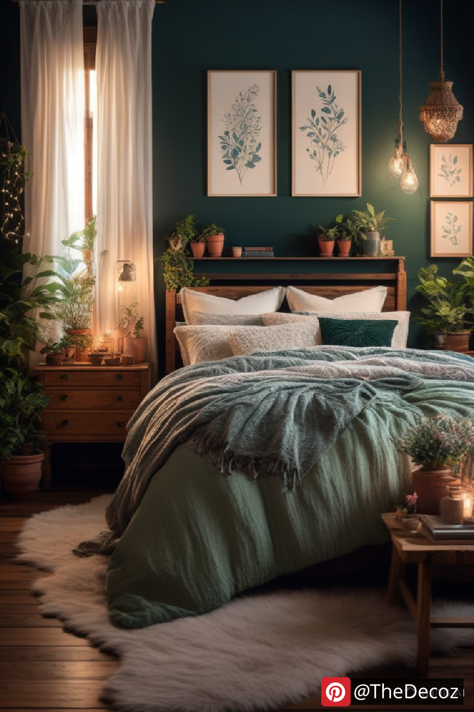
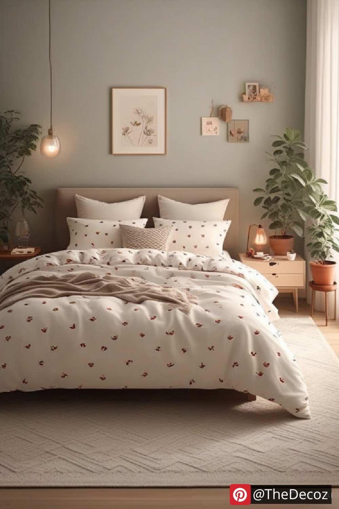
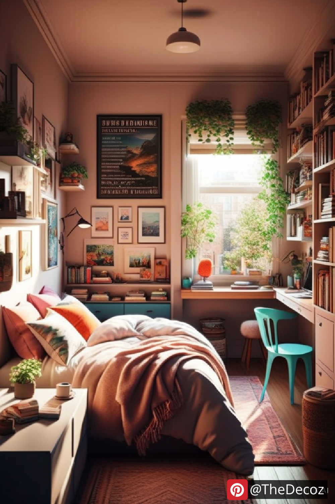
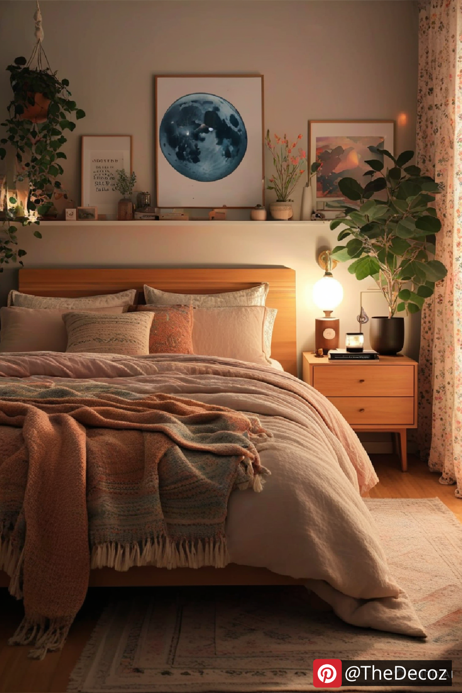
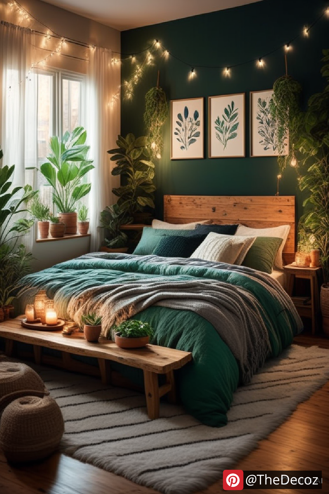

Decorating a small room can be a challenge, but with the right strategies, you can create a functional and stylish space that feels larger than it is. Whether you live in a compact apartment, a dorm, or simply want to make the most of a small bedroom, these innovative small room decor ideas will help you transform your space effectively.
Arranging furniture strategically is essential for small spaces. Opt for multi-functional furniture such as a bed with storage drawers underneath, a foldable desk, or a sofa that converts into a bed. Keep furniture against the walls to open up the central area and create a sense of spaciousness.
When floor space is limited, think vertically. Use floating shelves, tall bookcases, and wall-mounted racks to store books, plants, and decorative items. Hanging organizers can also help keep everyday essentials within reach without cluttering your room.
Light colors, such as white, beige, and pastel tones, make a room feel more open and airy. To add depth and personality, incorporate textured decor elements like soft rugs, curtains, and cushions in complementary shades.
Natural light can instantly make a small room feel larger and more inviting. Use sheer curtains or blinds to let in as much sunlight as possible. Placing mirrors strategically across from windows can reflect light and create an illusion of depth.
Invest in furniture with hidden storage compartments, such as ottomans with inside storage or beds with pull-out drawers. Additionally, using stackable boxes, under-bed storage, and wall-mounted hooks can help keep your space organized without overwhelming the area.
Select decor that serves multiple functions. For example, a stylish ladder shelf can hold books, plants, and lighting. A foldable wall-mounted desk can act as both a workstation and a dining table. Space-saving furniture is key to maintaining both style and practicality in small rooms.
Mirrors create the illusion of a larger space by reflecting light and making the room appear more open. A large wall mirror or mirrored furniture pieces can instantly enhance the overall aesthetic of your small room decor.
Clutter makes small spaces feel even smaller. Opt for a minimalist approach by keeping only essential furniture and decor. Choose a few statement pieces that complement the room’s theme without overwhelming it.
Plants add freshness and warmth to a small space without taking up much room. Hanging plants, small potted succulents, or vertical gardens can improve air quality and bring a lively touch to your decor.
Even in a small space, you can infuse your personality into the decor. Display a gallery wall with framed art, use patterned cushions, or include a stylish rug to tie everything together. Adding personal elements will make the room feel cozy and uniquely yours.
Small room decor doesn’t have to be limiting. By choosing the right furniture, utilizing vertical space, incorporating smart storage, and embracing a minimalist aesthetic, you can create a functional and beautiful environment. With these creative ideas, your small room will not only look stylish but also feel spacious and inviting.
    